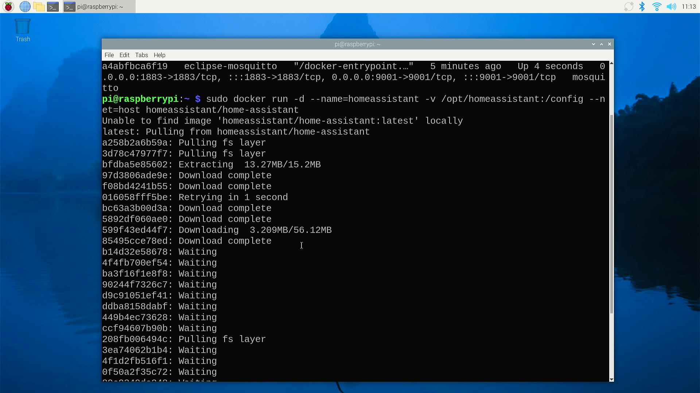
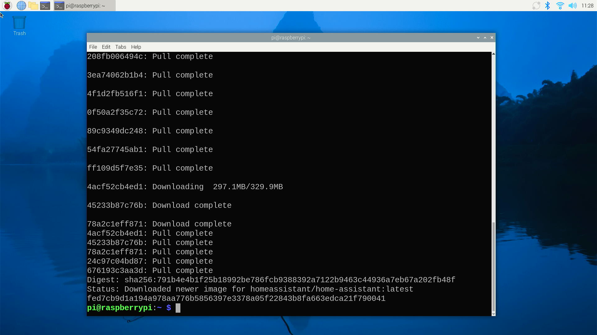
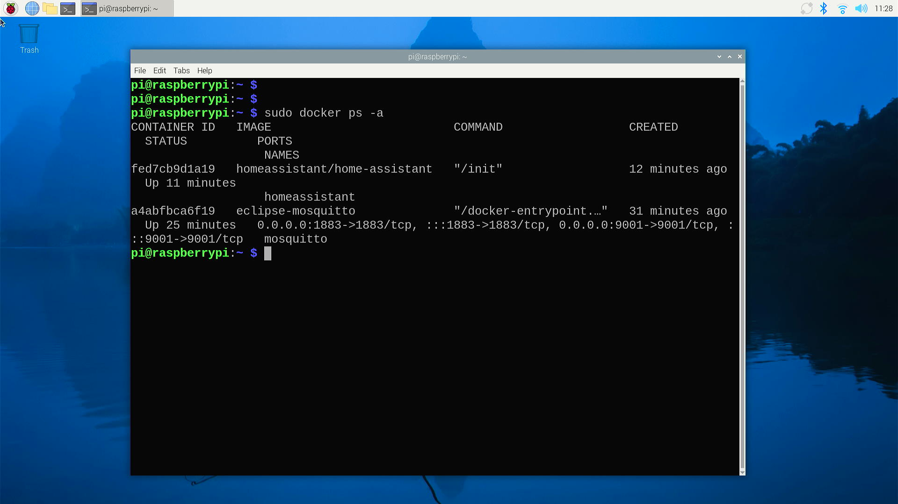
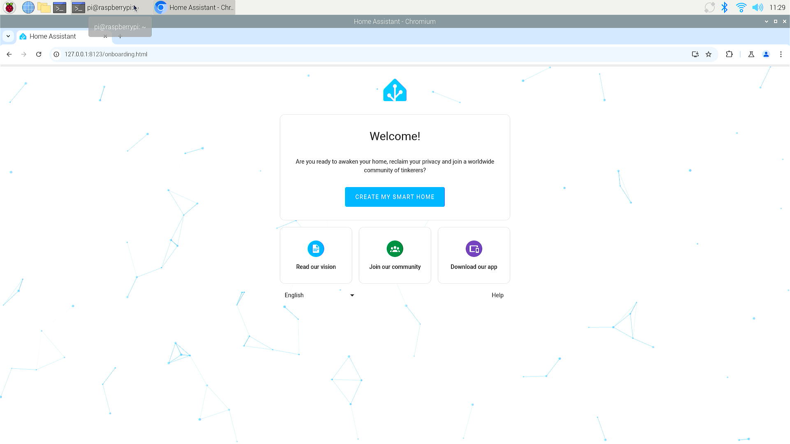
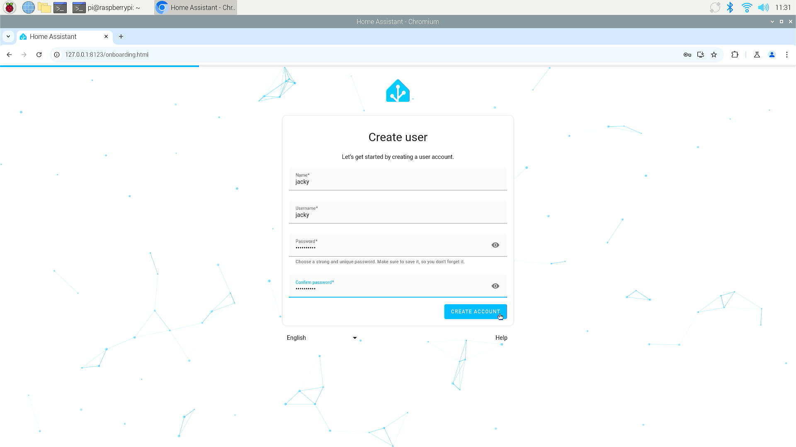
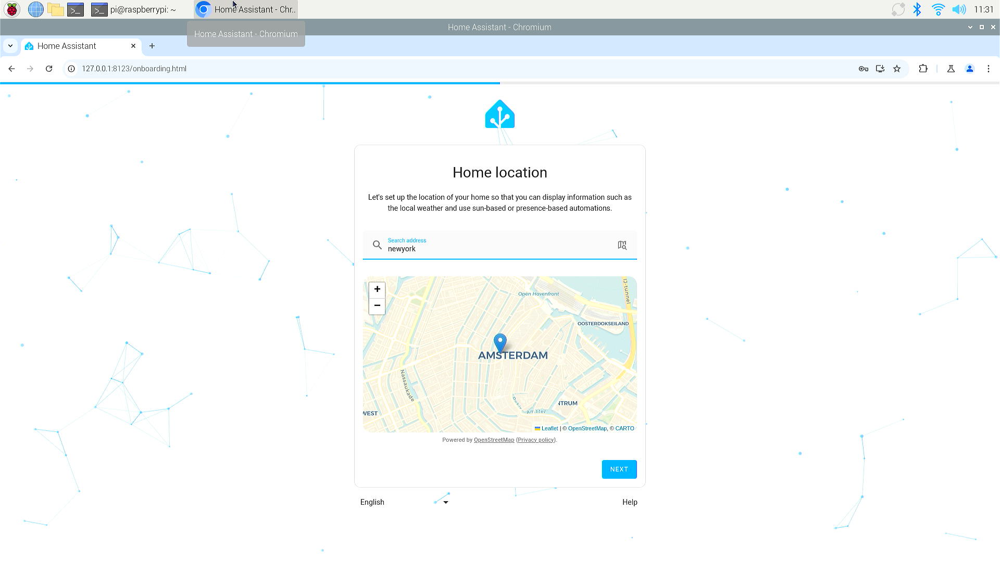
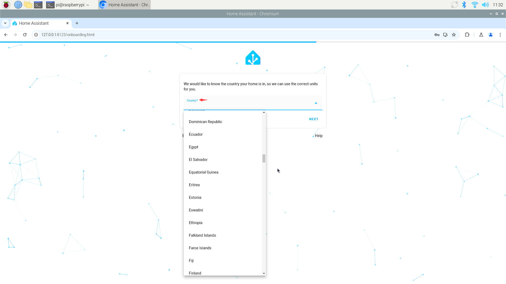
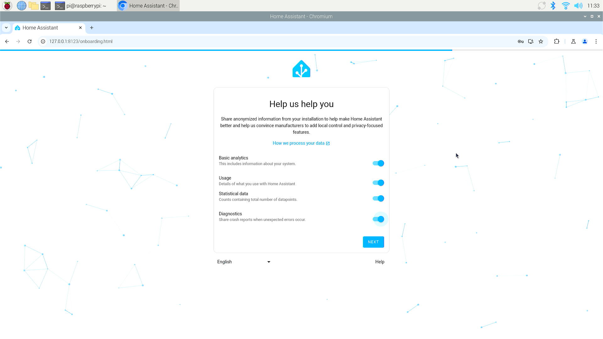
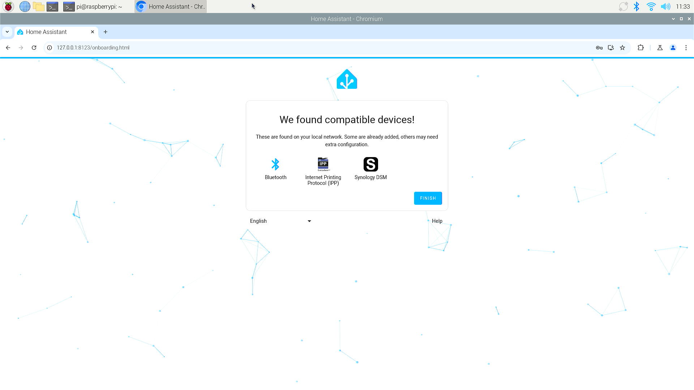
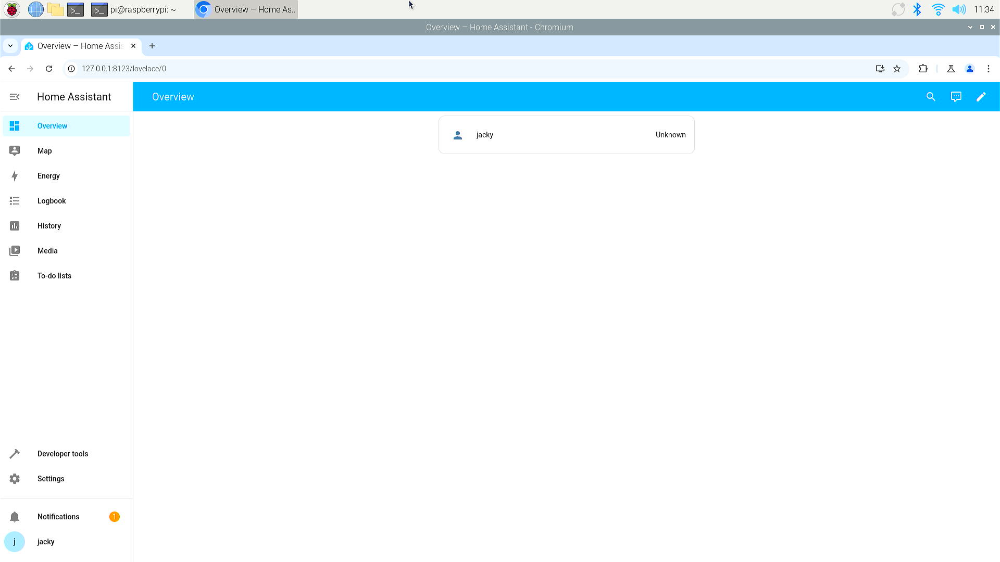

Setup HomeAssistant Container
Home Assistant Container
Home Assistant Container is a method of running Home Assistant using Docker, a platform that allows applications to be packaged and run in containers. This approach provides several advantages:
Benefits of Home Assistant Containers
- Isolation: Containers run in isolated environments, ensuring that Home Assistant and its processes do not interfere with other applications or the host system.
- Portability: Home Assistant can be easily moved between different systems as the container is self-contained.
- Scalability: It's simple to scale up or down depending on your needs, whether you're running on a Raspberry Pi or a powerful server.
- Easy Management: Docker containers can be started, stopped, and updated with simple commands, making management straightforward.
- Consistent Environment: Docker ensures that Home Assistant runs in the same environment every time, which is beneficial for maintaining consistent behavior across different systems.
How to Use Home Assistant Containers
To use Home Assistant in a Docker container, you need to have Docker installed on your system. Here are the general steps:
- Install Docker: Ensure Docker is installed on your machine. Follow the official Docker installation instructions for your operating system.
- Pull the Home Assistant Image: Use the Docker command to pull the Home Assistant image from Docker Hub.
- Run the Container: Start the Home Assistant container with the necessary configurations, such as volume mounts for your configuration files.
- Access the Interface: Once the container
Considerations
- Add-ons: Home Assistant running in a Docker container does not support add-ons out of the box. However, you can manually set up services using Docker Compose or similar tools.
- Backup: Regularly back up your configuration files to prevent data loss, especially if you are managing the container yourself.
- Updates: Keep your Docker image up to date to ensure you have the latest features and security patches.
Steps
Installation
- Open a terminal and typing following command:
sudo mkdir -pv /opt/homeassistant
sudo docker run -d --name=homeassistant -v /opt/homeassistant:/config --net=host homeassistant/home-assistant

Result

Finished:

Access from web browser
- Access Home Assistant via web browser, input
localhostor IP address of the docker server. and default port is:8123

- Create username and password

- Setting up home location

- Setting Country

- About the feedback of usage.

- Automatical found compatible devices

- Finshed setup

Finished
Congratulations!! you have installed home assistant container and make it works! you can move to next step right now!